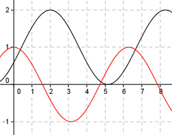

Aufgabe 270 Bestimmen Sie c und d für die dargestellten Graphen der Form y = a * cos (b * (x + c)) + d.  Abgelesen: Periode p = 2п (von 2 bis 8,28) --> 2п 2п |b| = ---- = ---- = 1 p 2п b = 1 oder -1 wegen cos(x) = cos(-x) acos(x + c) + d oder acos(-(x + c)) + d Verschiebung von Punkt (0|0) in (2|1) --> Abgelesen: Verschiebung entlang der y-Achse um 1 --> d = 1 acos(x + c) + 1 oder acos(-(x + c)) + 1 Abgelesen: Verschiebung entlang y = 1 um 2 nach rechts --> c = -2 acos(x - 2) + 1 oder acos(-(x - 2)) + 1 Abgelesen: |a| = 1 Keine Spiegelung an der x-Achse --> a = 1 --> y = cos(x - 2) + 1 oder y = cos(-(x - 2)) + 1 Zum Vergleich: cos(x)